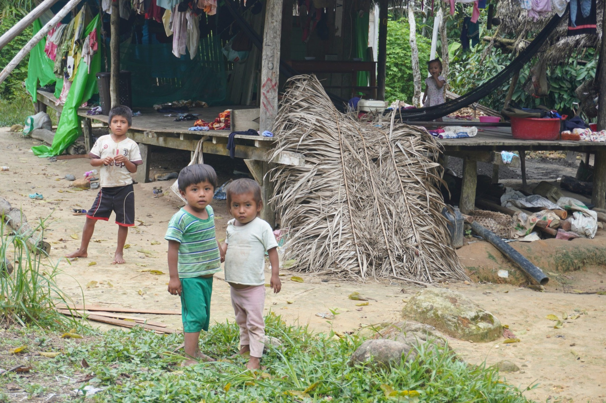
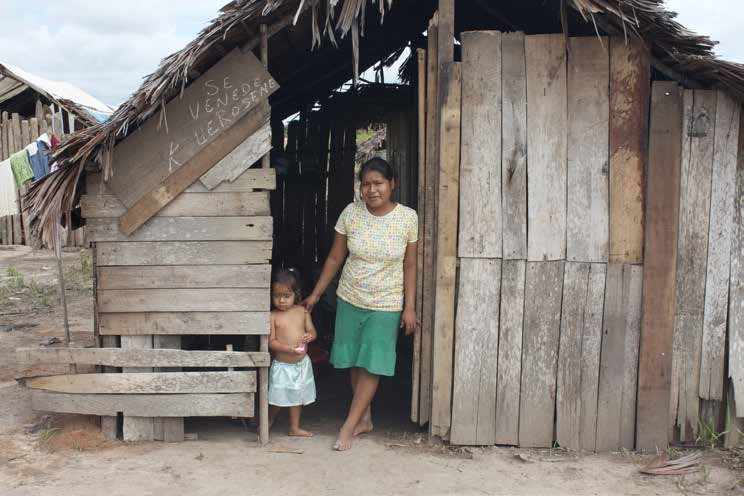
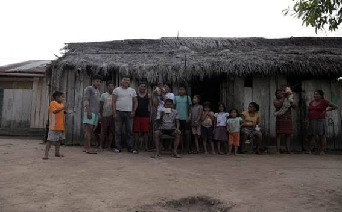

Una campaña de solidaridad para apoyar a niños en situación de orfandad y sus necesidades básicas, educativas y de bienestar.
DONAR AHORACONOCER LA CAUSAMeta indicada para esta campaña. El porcentaje se actualizará cuando se conecte el sistema real de donaciones.
Imágenes proporcionadas para presentar el entorno de la comunidad y la causa.



Apoyo para alimentos y productos básicos según las necesidades identificadas.
Útiles escolares, materiales educativos y recursos para favorecer la continuidad escolar.
Artículos de higiene, ropa y otras necesidades esenciales.
Coordinación con representantes locales para organizar y verificar las entregas.
Elige un monto de referencia y realiza tu aporte mediante el sistema oficial de donación.
Publicar periódicamente los montos recibidos y el avance de la campaña.
Conservar comprobantes de compras, traslados y entregas.
Identificar claramente a la organización o responsable que administra los fondos.
Responsable: Franklin Guing Huansi Sanchez
Teléfono / WhatsApp: 928 348 957
Correo: franklinguing@gmail.com
Banco: BCP
Cuenta en soles: 55094506220061
Ubicación: Balsapuerto, Loreto, Perú